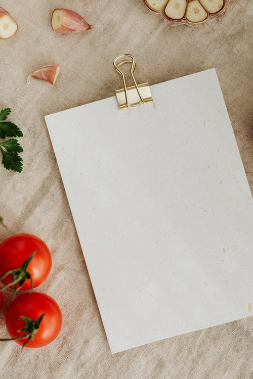
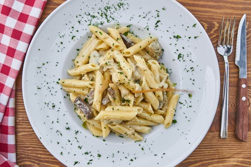
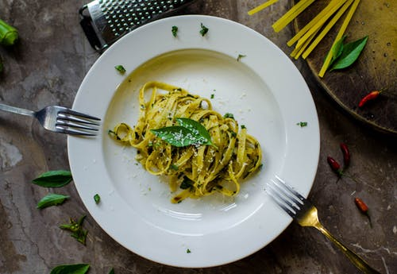
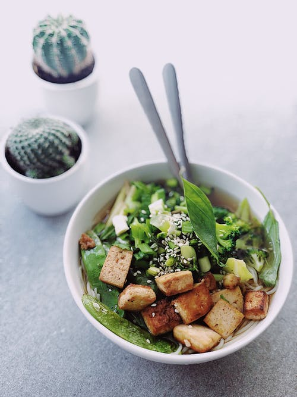
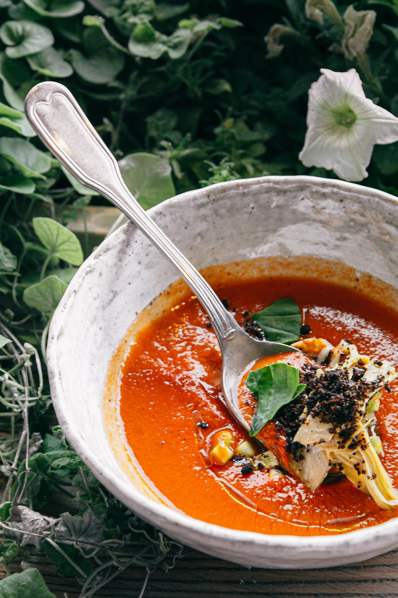

Inicio
Recetas Con Pasta

|  | Inicio |
 | Recetas Con Pasta |
 | |
Recetas Con Verduras |
 |
Recetas Con Pasta Sencillas, fáciles y DeliciosasHay días en los que no nos apetece complicarnos nada en la cocina ni tenemos los alimentos necesarios, necesitamos un plato sencillo y con pocos ingredientes pero además muy rico y que llene, una solución facil y sencilla es la pasta. Simplemente es pasta cocida y con un poco de aceite, queso y pimienta recien molida ya está buenísima, pero si además te animas a elaborar una salsa casera facil y sencilla, el resultado va a ser de 10.
Puré de calabazaEste puré de calabaza fácil y saludable y delicioso es muy sencillo, sólo tienes que limpiar las verduras, saltearlas unos minutos y cocerlas con agua. Sirve de tanto comida como cena ya que es muy ligero y saludable con un sabor riquísimo, pero también es la guarnición ideal para carnes y pescados, y lo mejor de todo es que puedes añadir las especias o hierbas que más te gusten y la textura que prefieras. Ingredientes De Nuestro Puré De Calabaza
Preparación del puré
Ahora ya puedes disfrutar de tu facil y sabroso puré que cualquiera puede comer Quiché de verdurasEl mundo de las tartas es gigantesco, aunque las más comunes sean las dulces tambien tenemos las saladas, y son brutales. Las quiches son un tipo de tarta salada, tradicionales de la cocina francesa, y sobre una base de masa quebrada (masa francesa especial), con huevos y nata puedes cuajar tanto carne como verduras, y la nuestra va a ser de verduras Este tipo tarta salada francesade está formada por una masa quebrada como base y acompañada por unos pocos ingredientes. Los principales son huevos y nata, que luego se les da otros ingredientes (de origen vegetal en este caso) como cebollas, puerros, zanahorias y otros varios que mostraré a continuación Ingredientes De Nuestra Quiché
Preparación de la quiché
Este es el resultado de tu sabrosa quiché de verduras 
|